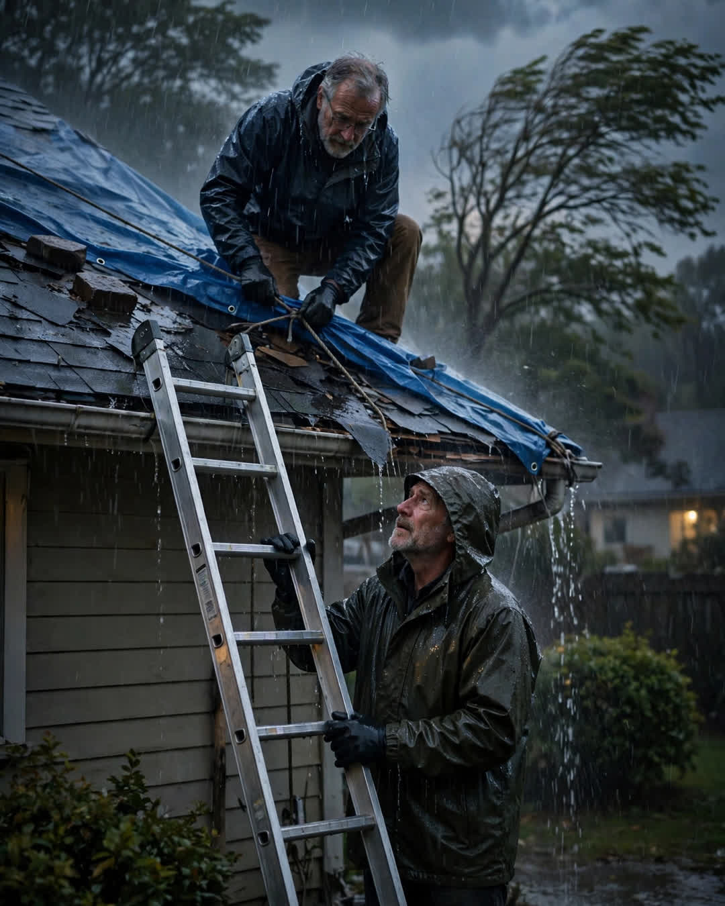

The Borrowed Ladder
A Clipp Kaili original story

The storm caught both of us on our roofs, and there was only one ladder between two men who had not spoken in four years.
Frank and Ellis had lived next door to each other for nineteen years on Willow Lane. For fifteen of them, they were the kind of neighbors who borrowed tools without asking and returned them full of gas. Then came the fence dispute, and the survey line, and the six inches of gravel driveway that somehow managed to swallow a whole friendship. Lawyers were mentioned. Voices were raised at a cookout. After that: silence. Nineteen years next door, and they took their trash out at different times so they would not have to nod.
The storm came in fast on a Tuesday evening in October. Black sky, wind bending the oaks, rain starting sideways before the warning on the radio even finished. A dead branch came down on Ellis's roof and tore the shingles over his daughter's old bedroom, and water found the hole in under a minute.
Ellis got his extension ladder — Frank's ladder, actually, borrowed in better years and never returned, which was part of the problem — and climbed up with a tarp and a hammer while the rain hammered him. Frank, hearing the banging through the storm, came onto his own porch and saw his old friend on a wet roof in a lightning season.
He did not think. That is what he says now. He ran.
"That ladder is not rated for this wind, you stubborn old fool," he shouted up. "You come down or I hold it. Pick one."
"You have not held anything for me in four years," Ellis shouted back.
"Then I am overdue."
Frank planted himself at the base of that ladder in the pouring rain, both hands locked on the rails, boots sinking in the mud, while Ellis worked above him. Twice the wind tried to take the tarp. Twice Frank climbed halfway up himself to hold the other corner, two grown men in their sixties stretched across a leaking roof in a thunderstorm, swearing at the weather and the shingles and each other, working like they had never stopped.
At one point, Ellis's foot slipped on the wet shingle.
Frank caught the ladder. The ladder caught Ellis.
They both came down shaking, soaked to the bone, and stood under Ellis's carport dripping onto the concrete while the rain finished its argument with the roof. The tarp held. The bedroom stayed dry.
Ellis looked at the ladder between them. "I should have brought this back in 2019," he said.
"You should have," Frank said. "It is a good ladder. I missed it." A beat. "Missed more than the ladder, if I am being honest before I lose my nerve."
Ellis nodded at the mud, at the storm, at four wasted years. "Six inches of gravel," he said.
"Six inches," Frank agreed. "Worst trade I ever made."
They split the cost of a new fence that spring. On the property line — the real one. Ellis painted Frank's side first. And the ladder? It lives in Ellis's garage now, with both their names on it in paint pen, and a standing rule on Willow Lane: whichever of them needs it just takes it, no knocking required.
Some friendships do not end. They just wait out the weather — until one man finally holds the ladder steady again.
This story is a work of fiction, written to touch hearts and bring families closer.
← Back to all stories